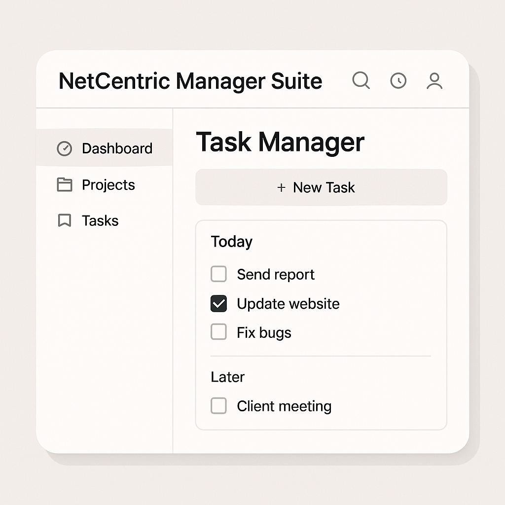
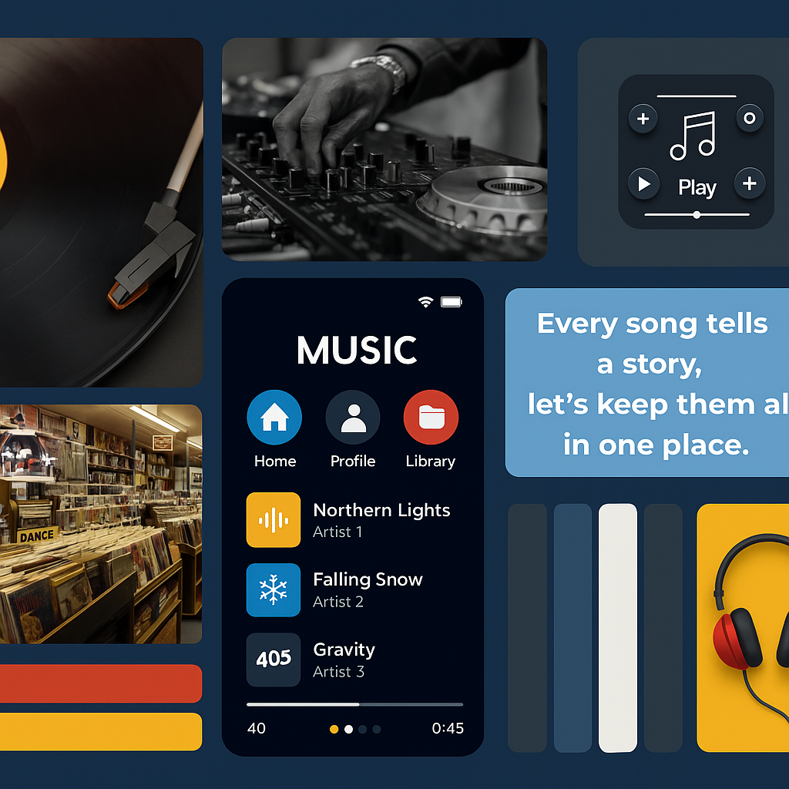
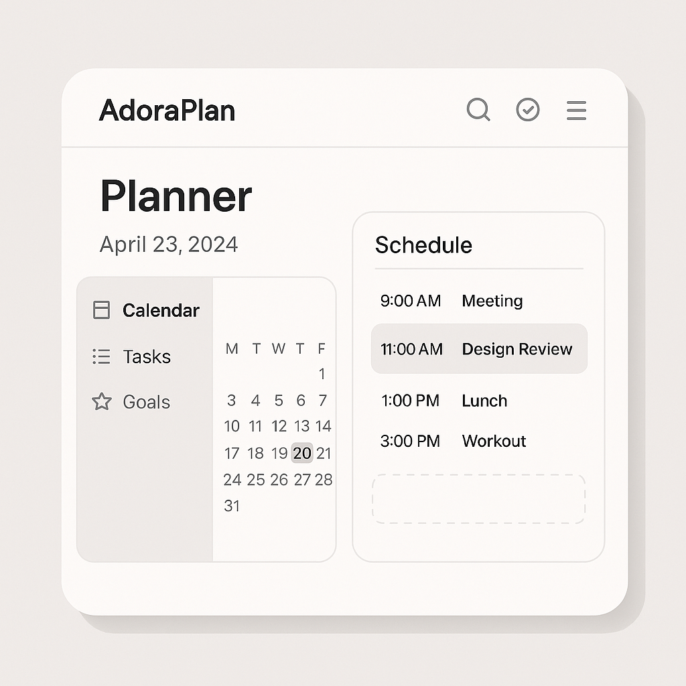
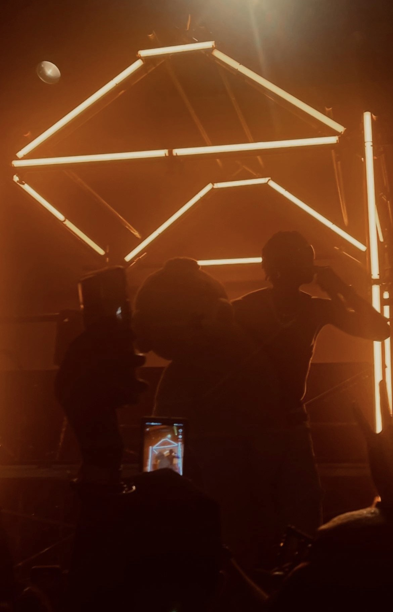
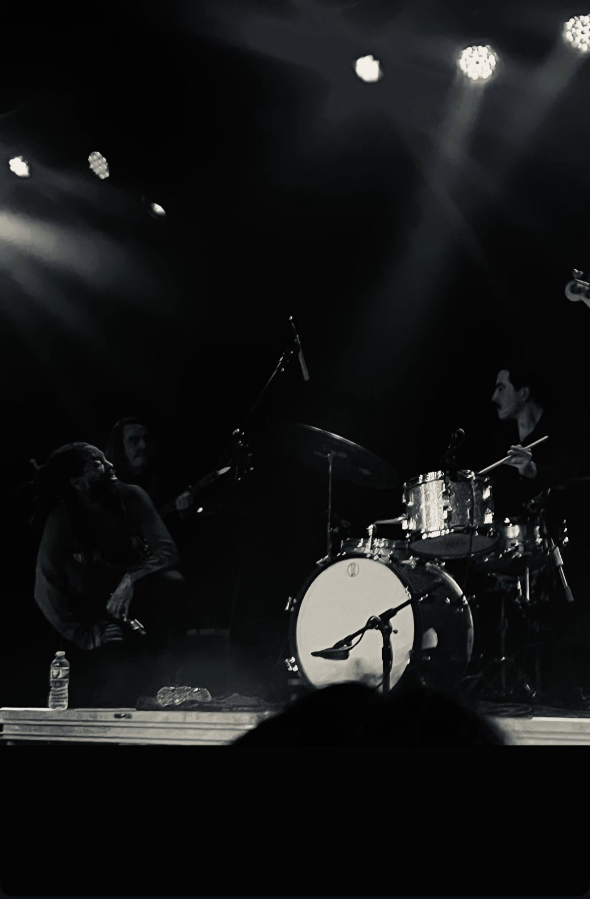
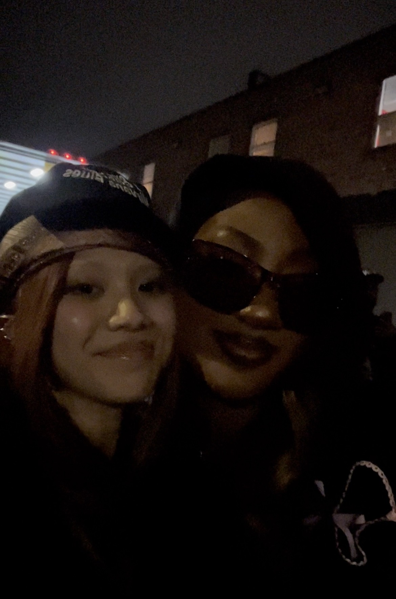

Hello, I'm Bria.
Information Systems & Data Analytics
Seattle Pacific University · Class of 2026
My background is in data analytics and information systems, with a toolkit spanning SQL, Python, Excel, data visualization, and systems design. I'm expanding into machine learning and AI to stay adaptable as the field evolves.
While I'm passionate about music and the creative industries, my commitment extends far beyond any one field. Wherever my career takes me, whether in technology, healthcare, or entertainment, I want to be the teammate who keeps the bigger picture in focus, centering the people, the culture, and the purpose behind the work.
I feel a strong calling to protect the humanity behind technology. To make sure progress doesn't come at the expense of creativity, connection, or ethics.
Most of the projects here are self-directed explorations that reflect my curiosity, adaptability, and dedication to learning. If this approach resonates with your team, I'd love to connect!
Get In Touch →Evaide, Senior Capstone Project
An AI-powered evidence ingestion and classification platform built with Azure AI, Vector Databases, and SQL. I serve as rotating Scrum Master, leading product discovery and Agile delivery, while also managing cloud security as Lead DBA. This app is actively in development and not yet complete, but you can explore a live preview below.
Yusuf@TestCompany.comWhatTheHeckadmin@evaide.comdAtAbaS3w0rk!?,Data Analytics Projects
.png)
Global Music Trends
An interactive SQL-powered dashboard exploring how music genres, moods, and languages evolve across regions and decades. Uncovers cultural shifts in global listening habits.
GitHub →.png)
Film Success Analysis
A data-driven dashboard uncovering what makes a movie a box office hit, analyzing budget, genre, release timing, and global markets using SQL, machine learning, and real-world APIs.
GitHub →.png)
Music Profile Analytics
A personalized dashboard analyzing Spotify listening habits, from genre diversity to artist origins. Uses audio features, clustering, and visual insights to map unique taste in music.
GitHub →Project & Product Strategy
Evaide
An AI ingestion app that automates evidence classification using Azure AI and Vector Databases. Served as rotating Scrum Master, leading product discovery and Agile delivery as well as cloud security as Lead DBA, configuring firewalls and RBAC in Azure to meet governance standards. Leveraged Claude & Gemini for rapid prototyping to develop a secure Azure Blob Storage and SQL architecture.
Live Demo →
Netcentric Manager Suite
A full-stack web app for managing dynamic lists using custom HTTP tools, Node.js, and vanilla JS. Features real-time item updates, CSV storage, and modular interfaces for streamlined client-server interaction.
GitHub →
Music Catalogue Design
A relational database system built to organize and explore music catalogs by genre, mood, and region. Includes ERD, wireframes, and SQL-backed features designed for scalable artist and track discovery.
GitHub →
AdoraPlan System
A complete system design project for managing Eucharistic Adoration schedules, including ERD, user flows, wireframes, and role-based access control. Built to streamline sign-ups and track commitments across parishes.
GitHub →Certifications
Databases & SQL for Data Science with Python
Relational databases, SQL from basic to advanced, views, transactions, stored procedures, and joins for complex data analysis.
Verify Certificate ↗
Python for Data Science, AI & Development
Core Python programming, Pandas, NumPy, Jupyter Notebooks, API integration, and web scraping with Beautiful Soup.
Verify Certificate ↗
More About Me
Data as a Listening Tool
At the heart of everything I do is one guiding question: how can we listen to people better, through music, data, and technology? That question fuels both my academic journey and my creative pursuits. I'm currently diving deeper into machine learning and AI-driven projects to explore how emerging technologies can push the boundaries of music and creativity.
Problems I'm Passionate About
- Helping organizations spot rising talent early through predictive analytics
- Improving recommendation systems to reflect diverse, global audiences
- Designing tools that support culturally relevant, localized content distribution
As a second-generation Vietnamese American who has been working in service roles since I was 15, I've developed strong interpersonal skills, adaptability, and a deep sense of empathy.

Turning Vision into Execution
I'm drawn to the challenge of turning big creative ideas into scalable, real-world systems. This means streamlining workflows, aligning cross-functional teams, and designing experiments that lead to better outcomes. Outside of tech, I'm also a musician, DJ, and event curator, creating spaces where people come together around sound.

Technology as a Bridge
As AI, data systems, and emerging technologies continue to transform the creative industries, I want to help build tools that are not only cutting-edge but also equitable, culturally aware, and human-centered. Music is a reflection of who we are, where we've been, and where we're going. I would love to be part of a team building toward that future.
